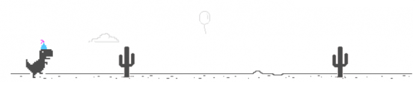

Jo Humphrey

Welcome to my website!
Oops! There's nothing here!
About Me
Sparse
Default
Very detailed
Basic Stats
Name
//
Jo
Pronouns
//
they/them
Lives In
//
Cambridge
Diet
//
Herbivore
Loves
Cats
Drums
Skateparks
Workers' co-ops
Open-source software
Donuts
Basic Stats
Name
//
Jo
Pronouns
//
they/them
//
Preferred
Lives In
//
Cambridge
//
Since 2012
Diet
//
Herbivore
//
Since 2014
Hair Colour
//
Variable
Loves
Drums
//
I drum for a local 10-piece funk band
//
Colonel Spanky's Love Ensemble
Skateparks
//
...and rollerblading! I'm now somewhat obsessed with the DIY skate scene...
//
Since July 2020
Donuts
//
My plan B if I don't get into F&C is to open a vegan donuts and skate shop!
//
Semi-serious
Basic Stats
Name
//
Jo
Pronouns
//
they/them
//
Preferred
> She/her are also acceptable
Lives In
//
Cambridge
//
Since 2012
> I'm originally from the North East of England!
Diet
//
Herbivore
//
Since 2014
Hair Colour
//
Variable
Favourite bands
//
Queen, The Beatles, ELO
> Jeramiah Ferrari, McFly, The Beach Boys, Rush, Els Catarres, Mika, Reel Big Fish, PUP, Postmodern Jukebox, Wings...I could go on!
Loves
Cats
//
I currently have two young black fluffy cats called Marmite and Malteaser
//
See photos
> I sometimes foster cats for a local shelter too.
Drums
//
I drum for a local 10-piece funk band
//
Colonel Spanky's Love Ensemble
> Check out our social media.
Skateparks
//
...and rollerblading! I'm now somewhat obsessed with the DIY skate scene...
//
Since July 2020
Donuts
//
My plan B if I don't get into F&C is to open a vegan donuts and skate shop!
//
Semi-serious
Employment
Skateistan (Skateboarding NGO)
//
Web intern
//
Nov 2020 - present
> Mainly fixing CSS bugs and learning a little bit of PHP.
Metaswitch Networks
//
Customer Care Engineer
//
June 2020 - Dec 2020
> Troubleshooting customer network issues.
> Running software upgrades.
Metaswitch Networks
//
Graduate Software Engineer
//
June 2019 - June 2020
> Learning Python and C...this workplace wasn't right for me and I re-applied for F&C a few months in.
Arjuna Wholefoods - vegetarian worker's co-operative
//
Worker/Member
//
Nov 2017 - May 2019
> Contributing democratically to how the shop was run.
Self-employed
//
The Pod vegan pop-up cafe
//
Oct 2016 - May 2019
> My long-term plan was to make this Cambridge’s first vegan, zero-waste workers’ co-operative cafe!
Why Coding?
Challenging
//
and ever-changing
> I love that there's always something new to learn.
Essential
//
Our world is technological
> Learning to code today is actually like learning about how the modern world works.
> The internet was created for the public good, and I want to help make it (and programming skills) accessible to all.
Productive
//
and creative
> It's so cool to actually build things!
> There are so many areas to specialise in, from UX design, to database engineering.
Potential for doing good
//
Creating solutions
> Tech is powerful, and I'm so excited about the problems I could help solve with its help.
> Coding could easily help me to satisfy my entrepreneurial itches.
> It stimultates my intellectual curiosity and will equip me with skills that could be used to actually make a difference in the world.
About This Site
Recognise this?

Yes, that's my last F&C application website, a.k.a, the first website I ever made! (source code here)
I applied to F&C last year and was offered a place, but I was unable to take it due to anachronistic notice periods. I then put off applying to the next cohort due to uncertainty around the pandemic.
Ever since I discovered F&C, a little over two years ago, a tiny voice in my head has been whispering: *this is where you're meant to be...*
What's different about my site this time?
- I developed it mobile-first
- My CSS is structured more cleanly and methodically
- I pushed myself to try new things, like the random stylesheet generator (did you know that this page randomises its colour scheme on load?) and detail slider.
- I was conscious of accessibility concerns and tried to make the site as user-friendly as possible.
- I was more aware of differences between browsers and devices, and tried hard to provide an equal experience across them all.
Why F&C?
Values
- The values of F&C strongly align with my own.
- I aim to define my career by making a difference to the world.
- I want to encourage more people from under-represented groups in tech to learn to code.
- Co-operatives are my favorite form of organisation! (See reason three for gushing about co-ops)
Community
- I want a learning environment where I am supported by like-minded people who share my enthusiasm, commitment and values.
- Nobody gets left behind!
- I want to join the alumni community that champions the power of tech for good throughout the globe.
Co-operative
- I ❤ co-ops! I tried to set up a workers' co-op vegan café, and previously worked as a member of a vegetarian workers' co-op shop.
- I'm 100% behind the principles of collective decision-making, community concern and inter-co-operative support.
- I believe in the resilience and creativity of co-ops, and I hope that my future lies in a tech co-op.
Diversity
- I want to learn new ways of thinking from an environment where diversity of experience is represented.
- I want to learn in a safe space, where womxn and members of other minority groups are seen, heard and listened to.
- I want to be a visible role model for the minority groups that I represent in the tech industry, and a passionate ally to those who do not share some of my privileges.
Career
- I'm serious about making a career in tech - a sector which is dynamic, flexible and full of possibility!
- F&C has an enviable list of cool-looking employer links. 😏
- The full-time, focused course will ensure that this becomes a journey of a lifetime!
Pay It Forward
- The coding community has given so much to me already, through free mentoring schemes such as CodeBar and DjangoGirls, and the F&C meetups and resources.
- I have also benefited from other empowerment projects, such as the Prince's Trust.
- It's only right to aim to pass what I have learnt to others, and benefit everyone as a collective. #teamwork
Images


Links
for links to the other application requirements...